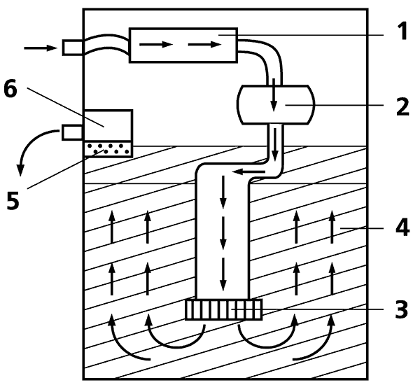
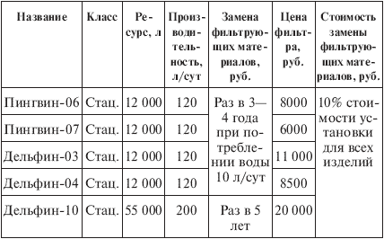

Бытовые фильтры. для очистки воды «ЭКО-АТОМ» .

Компания «ЭКО-АТОМ» (Санкт-Петербург) – детище В.Я. Сквирского, человека многогранно одаренного, инженера и литератора, большого энтузиаста чистой питьевой воды. Мы еще встретимся с ним, а сейчас поговорим об «ЭКО-АТОМе», его создании.
На сегодняшний день компания выпускает бытовые стационарные фильтры «Пингвин-06», «Пингвин-07», «Дельфин-03», «Дельфин-04» и «Дельфин-10» (табл. 5.10) – точнее, сложные фильтрующие установки, подключаемые к электросети, упрощенная схема которых представлена на рис. 10 (некоторые модели снабжены компьютером). В этих установках вода сначала обеззараживается с помощью ультрафиолетового облучателя 1 и проходит через блок омагничивания 2, затем опускается к механическому фильтру грубой очистки 3, поднимается вверх, очищаясь в девятнадцатислойном сорбционном фильтре из природных сорбентов 4, проходит через фильтр тонкой очистки 5 и, наконец, попадает в генератор ионов серебра 6. Смысл последней операции заключается не только в том, чтобы окончательно уничтожить микроорганизмы (это в некоторой степени достигается в самом начале обработки с помощью ультрафиолета), но и в том, чтобы добавить в уже очищенную воду ионы серебра в небольшой концентрации, чтобы она сохраняла бактерицидные свойства, не насыщаясь живыми бактериями из воздуха. Иными словами, серебро в данном случае играет роль консерванта.

Рис. 10. Схема очистки воды в фильтрах компании «ЭКО-АТОМ»
Установки «ЭКО-АТОМ» вырабатывают серебряную воду, которую пили космонавты на космической станции. Эта вода была премирована на различных выставках, а «Пингвины» стали лауреатом конкурса «Сто лучших товаров России» 2001 г. (лауреатский диплом Госстандарта России я видел лично). Кроме бытовых фильтров и серебряной бутилированной воды «ЭКО-АТОМ» производит более крупные устройства с ресурсом в десять и более тонн воды, рассчитанные на школу, детский сад, больницу, ресторан или иное предприятие.
Таблица 5.10. Фильтры компании «ЭКО-АТОМ»

Примечания.
1. «Дельфин-03» и «Пингвин-06» снабжены компьютером, «Дельфин-10» – крупногабаритная напольная установка.
2. В магазинах продукция «ЭКО-АТОМ» появляется нечасто, но перечисленные установки можно приобрести по адресу компании.
Комментарий.
Разработанные системы «ЭКО-АТОМ» являются серьезным достижением в очистке воды в бытовых условиях, ибо до сих пор такая технология была доступна лишь военно-промышленному комплексу. У них имеется один недостаток – высокая цена. Но, как не раз подчеркивал В.Я. Сквирский, хорошая вода не может дешево стоить.